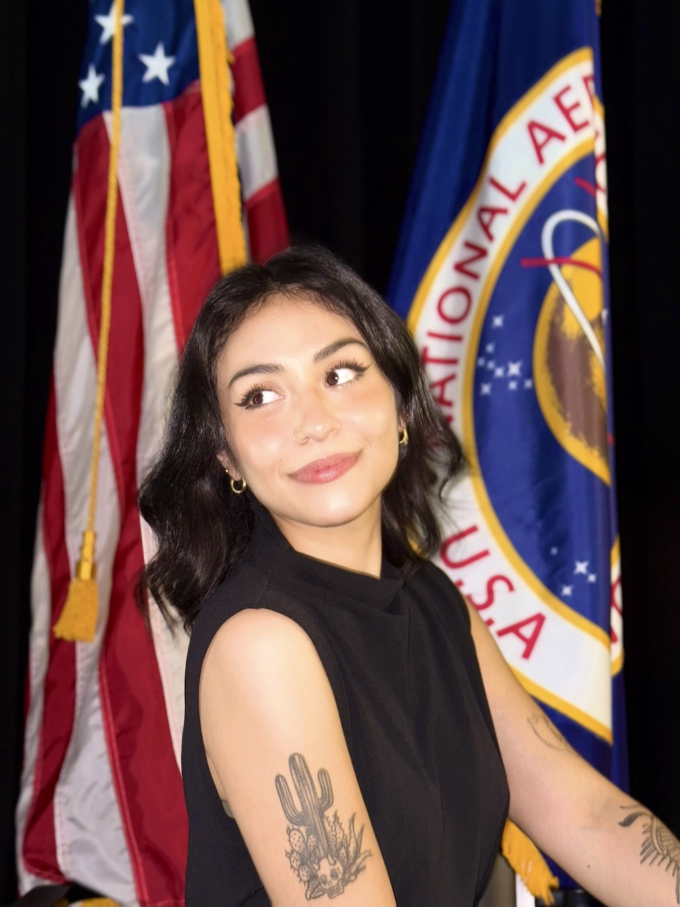

About Me
Welcome to my page!
I received my Bachelor’s of Science in Mechanical Engineering with a minor in mathematics from The University of Texas at El Paso. During that time, I completed seven internships across academia, industry, and government within the aerospace and manufacturing fields.
Currently, I'm a PhD candidate at Carnegie Mellon University in Mechanical Engineering researching advanced in-situ monitoring techniques for metal additive manufacturing processes. My work focuses on melt pool thermography for closed-loop process control of WAAM systems, with an emphasis on enhancing mechanical performance and reducing defects. I’ve collaborated with NASA and other industry partners to translate research into applied aerospace manufacturing.
Resume/CV
Explore my projects!


Get in Touch
Want to collaborate, ask questions, or just say hi? I’d love to hear from you. The fastest way to reach me is via email!
gsolis@andrew.cmu.edu